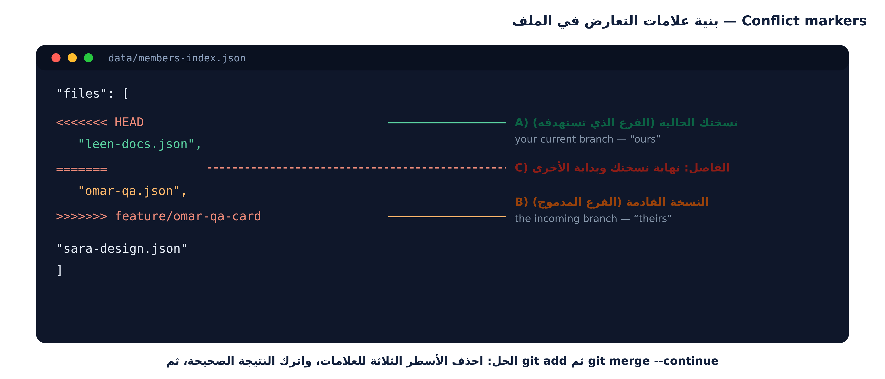

اليوم الدمج لا يُنهى إلا بعد فهمه: كل تعارض حلّيته ستشرحه في تقرير التسليم بجملة واحدة واضحة.

حلّ التعارض = قرار محتوى، والجهاز يساعد لكن القرار لك ولفريقك.
$ git switch main && git pull --ff-only $ git switch -c sandbox/conflict-<team> $ nano data/site-config.json # الفريق الأول: h1Title = "دليل صف 2026" $ node tests/validate-members.mjs $ git add data/site-config.json $ git commit -m "content(config): set team headline (team A)" $ git push -u origin sandbox/conflict-<team>
data/site-config.json هو ميدان التدريب: يتغير بسرعة، ولن يضر الموقع$ git switch main && git pull --ff-only $ git merge sandbox/conflict-<team> Auto-merging data/site-config.json CONFLICT (content): Merge conflict in data/site-config.json Automatic merge failed; fix conflicts and then commit the result. $ git status -sb ## main UU data/site-config.json
{
"siteName": "دليل فريق الصف",
<<<<<<< HEAD
"h1Title": "دليل صف 2026",
=======
"h1Title": "دليل فريق الصف",
>>>>>>> sandbox/conflict-team-a
"contactEmail": "team@example.com"
}| العلامة | تعني |
|---|---|
| <<<<<<< HEAD | بداية منطقة التعديل الموجود على فرعك الحالي |
| ======= | الخط الفاصل بين الرأيين |
| >>>>>>> name | بداية تعديل الطرف الآخر |
✘ خطأ قاتل: ترك أي من العلامات الثلاث في الملف. المشروع لن يعمل، وهذه أسرع طريقة لرفض طلبك في المراجعة.
{
"siteName": "دليل فريق الصف",
"h1Title": "دليل صف 2026",
"contactEmail": "team@example.com"
}
$ grep -rInE "^(<{7}|={7}|>{7})( |$)" --exclude-dir=.git . ← لا مخرجات = لا علامات متبقية ✔ $ node tests/validate-members.mjs --- النتيجة / Result: 6 بطاقة، 0 خطأ، 0 تحذير --- $ git add data/site-config.json $ git commit -m "merge: resolve site-config headline conflict" $ git push
| الأداة | القيمة عند التعارض |
|---|---|
| VS Code | تلوين الطرفين وأزرار Accept Current/Incoming — مع معاينة مباشرة |
| GitHub Desktop | فتح الملف في محرر والخيارات الأربعة، ثم Continue merge |
| git diff | رؤية الفرق بنص واضح قبل أي قرار |
| git mergetool | فتح أداة الفروق الثلاثية (ثلاثة أعمدة) عند الحاجة |
مهما استخدمت من أدوات: القرار قرارك، والأداة تعرض لا تحكم. اقرأ الطرفين قبل الموافقة.
$ git tag -a v1.0.0 -m "الإصدار الأول: بطاقات الفريق العشرة + صفحة الأسئلة الشائعة" $ git push origin v1.0.0 To https://github.com/<org>/class-team-hub.git * [new tag] v1.0.0 -> v1.0.0 $ git show v1.0.0 --stat --no-patch tag v1.0.0 Tagger: Omar Al-Qasem <omar@example.com> Date: Tue Nov 3 11:20:14 2026 +0300 الإصدار الأول: بطاقات الفريق العشرة + صفحة الأسئلة الشائعة
-a) يحمل: من وسم، ومتى، ولماذا — لأنه مرجع رسمي للفريقSettings → Pages
Source: Deploy from a branch
Branch: main / (root)
→ Save
# بعد دقيقة:
https://<org>.github.io/class-team-hub/
الصفحة قد تحتاج 1–3 دقائق حتى تظهر أول مرة. حدّث الصفحة، وإن استمر الخطأ فتحقق من: اسم الفرع، ومجلد الإخراج، وأن index.html في الجذر.
عند نجاح النشر: ضع الرابط في وصف المستودع (About → Website) وفي رسالة الالتزام النهائي.
git log --oneline --graph --all واسأل: أي عقدة جمعت عمل كل الفريق؟git tag -l ثم git ls-remote --tags origin: هل الوسم على الخادم فعلاً؟الوسم المحلي وحده لا يُرفع تلقائياً مع git push — يحتاج git push origin v1.0.0 أو git push origin --tags.
ws6-automation)هذه المهارات تُختبر في المقابلات العملية. احتفظ بمستودع المشروع في سيرتك، واربطه بحساب GitHub.
لا تنسَ: كل ما تعلمته اليوم يستخدمه المهندسون كل يوم في العمل الفعلي. الفرق بينك وبينهم اليوم: عدد المحاولات، لا الموهبة.